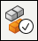

Create a duplicate pattern
Use the Duplicate command to create a pattern of selected features that are positioned relative to blocks or coordinate systems.
-
Choose the Home→Pattern→Pattern list→Duplicate command

. -
Select the features to be included in the pattern and then right-click or click the Accept button on the command bar.
-
Click a block or coordinate system to define the parent reference. This defines how the selected pattern features are positioned relative to the block or coordinate system.
-
Click a block or coordinate system to define the duplicate location. You can also click the All Matching Blocks option to expand the selection to all occurrences of parent and instance reference blocks.
-
Click Accept or right-click.
-
Finish the feature.